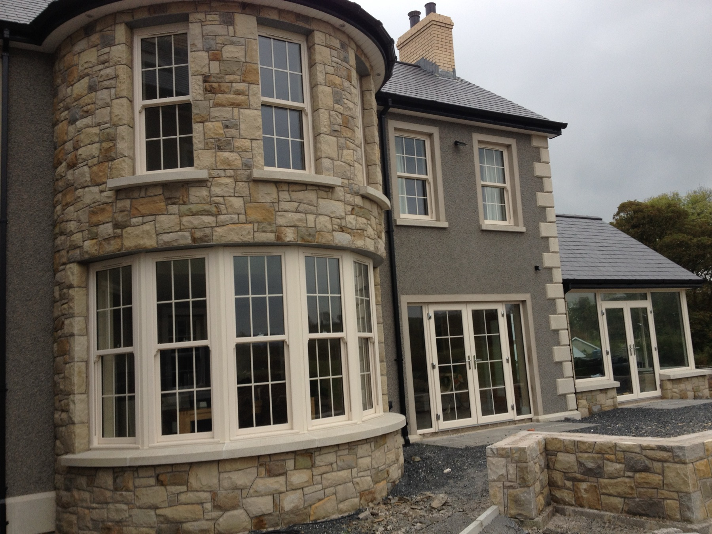

RESIDENTIAL
Private Dwelling Saintfield
Saintfield

Part of the wider picture.
PVC sliding sash windows, composite doors and glazed linkway frames supplied and fitted for a new private dwelling.
Back to the gallery ←RESIDENTIAL
Saintfield

PVC sliding sash windows, composite doors and glazed linkway frames supplied and fitted for a new private dwelling.
Back to the gallery ←A PRACTICAL NEXT STEP
028 9752 8278